How they work, what goes into building one, and how to think about specifying your own — written by the engineers who build them.
Why Two Product Lines Exist
For years, customers asked Powerblanket to build heated hoses and transport lines. We didn't have a good answer for them. We build custom heating solutions, but a long, flexible, field-deployed heated line is a different engineering problem than a heating blanket.
That changed in 2022, when Thermon acquired Powerblanket. It gave us access to a wealth of proven heat-trace technology and expertise — including Thermon's Tubing Bundle Group, which has spent years perfecting long-run heated sample bundles and CEMS lines by combining heat trace, tubing, insulation, and an advanced extrusion process. They do great work. But that process is built for long production runs, not the short, one-off custom lines our customers were asking for.
That's where Powerblanket's own manufacturing process fit. We build thousands of one-off custom heaters a year, and that process translates directly to small-batch heated lines. Using the heat-trace technology Thermon provided, we developed a way to build heated sample and transport lines in quantities as low as one, in lengths from 2 to 140 ft. That became HSL2000.
We then adapted our own core technology — resistive heat tape, the same heating-element family behind Powerblanket's blankets — into the same product category, to reach higher flexibility and higher temperature capability than a self-regulating cable can offer. That became HSL1000.
Since then we've delivered hundreds of custom heated line designs across RATA testing, chemical processing, chip manufacturing, automotive manufacturing, and robotics — and built real expertise in thermal modeling, material selection, and advanced manufacturing along the way.
An unmet need. Customers wanted heated hoses and transport lines. Powerblanket didn't yet have the right process to build them.
2022 — Thermon acquires Powerblanket. Access to proven heat-trace technology, including Thermon's Tubing Bundle Group and its long-run extrusion process.
HSL2000 is born. Thermon's heat-trace technology, built via Powerblanket's small-batch process — quantities as low as one, lengths from 2 to 140 ft.
HSL1000 follows. Powerblanket's own resistive heat tape, applied to the same category for higher flexibility and higher temperature.
100s of designs since. RATA testing, chemical processing, chip manufacturing, automotive manufacturing, robotics — and deep expertise in thermal modeling and materials.
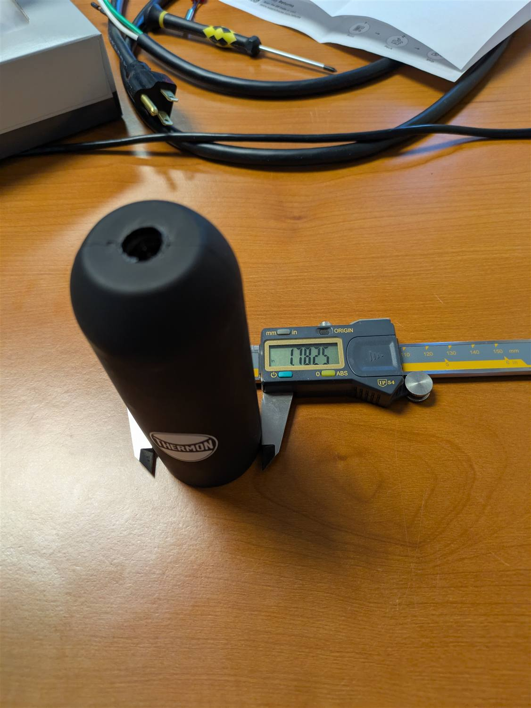
One thing we've learned over the years is that most customers aren't really looking for a heated hose.
They're trying to solve a problem.
Maybe it's condensation in a sample line. Maybe a chemical solidifies before reaching the process. Maybe a test instrument needs a stable temperature to produce reliable data. Maybe a material is simply too viscous to pump without heat.
The heated line is only part of the solution.
That's why this website exists.
Our goal is to share what we've learned about heat transfer, material selection, tubing, insulation, controls, and manufacturing so engineers can make informed decisions—even before they contact us. Whether you're comparing heating technologies, trying to determine the required watt density, selecting tubing materials, or wondering if your application is even feasible, we hope you'll find useful answers here.
And when you don't, we'd love to help.
Every heated line we build is designed and manufactured in Salt Lake City, Utah, where our engineering and production teams work side by side. That means you can speak directly with the engineers developing your solution, receive rapid feedback on new concepts, and move from idea to prototype quickly.
Some companies are built for high-volume production.
We're built to solve challenging industrial heating problems.
Whether you need a single prototype, a custom assembly, or a production run, our team enjoys tackling the applications that don't fit neatly into a catalog.
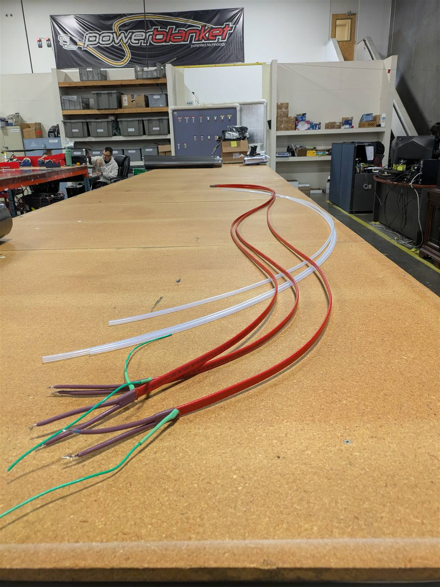
Why It Matters
The Fix
A heated sample line holds an analytical sample above its dew point from tap to analyzer, so it arrives representative of the process — not whatever it became along the way.
A heated transport line holds a transferred material — adhesives, resins, heavy oils — within its workable temperature range so it arrives ready to use, not congealed in the hose.
Engineering Q&A
Real answers to the questions that come up most before anyone requests a quote. If yours isn't here, an engineer will get you a real answer either way.
Most Powerblanket heated lines maintain sample temperature up to 400°F (200°C) with a tape heater (HSL1000-style construction), or up to 356°F (180°C) with a self-regulating or power-limiting cable (HSL2000-style construction). Exact ceiling depends on the tube, insulation, and jacket chosen.
A heated sample line holds an analytical sample above its dew point from tap to analyzer, so it arrives representative of the process. A heated transport line holds a transferred material — adhesives, resins, heavy oils — within its workable temperature range so it arrives ready to use, not congealed in the hose. Same engineering discipline, different job.
A tape heater is an alloy heater wire wound on a polyimide/silicone tape, custom-built to your exact watt density — it has the highest continuous-temperature ceiling of the two (400°F/204°C) and suits small-batch, one-off builds. A self-regulating or power-limiting cable is selected from fixed watt-density steps, self-limits its own output as it warms (resisting burnout at a pinch point), and is available rated for hazardous (classified) locations.
It follows the standard cylindrical-conduction heat-transfer equation for insulated pipe — power density scales with the temperature rise you need above ambient, the tube diameter, and the insulation's thermal conductivity. Typical watt densities run 5–20 W/ft. Try the interactive power-density chart in the Engineering Guide to see the real math update live for your own numbers.
PTC stands for positive temperature coefficient — as a resistive heater wire heats up, its electrical resistance rises, which pulls its current, and therefore its power output, down at a fixed voltage. Depending on the wire, that can mean up to a 25% drop in amps between ambient and 400°F, and longer heaters are more likely to need a higher-PTC wire, which compounds the effect. That's why a heated line is never sized to just the theoretical steady-state heat loss — real designs add margin so the heater still delivers enough power once it's hot, not only when it's cold. See it applied directly in the interactive power-density chart, which plots both the theoretical minimum and the real engineering-recommended power density.
For trace-level or adsorption-sensitive sampling, inert-coated stainless steel (such as SilcoNert-coated 316 SS) is the standard choice — it resists adsorbing or reacting with trace-level compounds, which protects analytical accuracy. PFA and PTFE are also common where their chemical resistance and smooth bore fit the application.
Meta-Aramid/Nomex felt is the standard choice — it has the widest temperature headroom (up to 650°F) above the heater's own ceiling at the lowest relative cost. Silicone adds flexibility and moisture resistance at a higher cost; Neoprene trades temperature ceiling for oil, ozone, and weather resistance outdoors. The right choice depends on your environment, not just your temperature.
Powerblanket builds heated sample and transport lines in quantities as low as one, in lengths from 2 ft up to 140 ft, depending on heater construction and power requirements.
Typical minimum bend radius is around 4 in (100 mm), for both tape-heater and self-regulating/power-limiting cable constructions.
Yes. Hazardous-location configurations are available with FM and CSA approvals (Class I/II, Divisions 1 and 2, and Zone 1/2 ratings depending on construction). Exact certification depends on the specific configuration and is confirmed during engineering review.
Just one. Powerblanket's manufacturing process was built for small-batch, custom work — the same process that lets us build thousands of one-off custom heaters a year translates directly to heated lines in quantities as low as one.
We've delivered custom heated line designs across RATA testing, chemical processing, chip manufacturing, automotive manufacturing, and robotics — and built real expertise in thermal modeling, material selection, and advanced manufacturing along the way.
Thermon acquired Powerblanket in 2022. Powerblanket is a Thermon company, and every heated line is still designed and manufactured at Powerblanket's facility in Salt Lake City, Utah.
Describe your application on the Talk to an Engineer page. A Powerblanket specialist reviews it, confirms feasibility, and follows up with a preliminary recommendation, relative cost tier, and real pricing and lead time — free, before you ever request a quote.
Anatomy
Hover or tap a layer to see what it does.
Hover a layer, or the list below
End-to-end, a bundle also includes:
Two heater constructions, one shared temperature ceiling:
Both typically maintain sample temperature up to 400°F (200°C), at 120/208/240/277 VAC, with a minimum bend radius around 4 in (100 mm).
Exact lengths, materials, and certifications vary by configuration — that's what the engineering interview below is for.
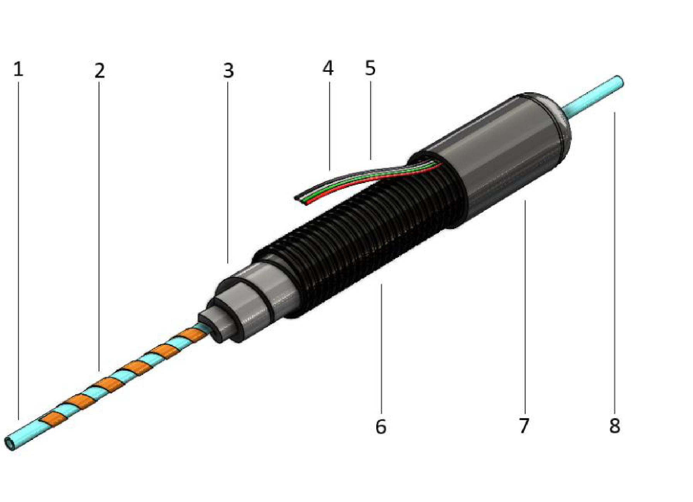
1. Process tube · 2. Alloy heater wire on polyimide/silicone tape · 3. Meta-aramid felt insulation · 4. Power leads · 5. Temperature sensor · 6. Outer jacket · 7. End seals · 8. Optional end connections
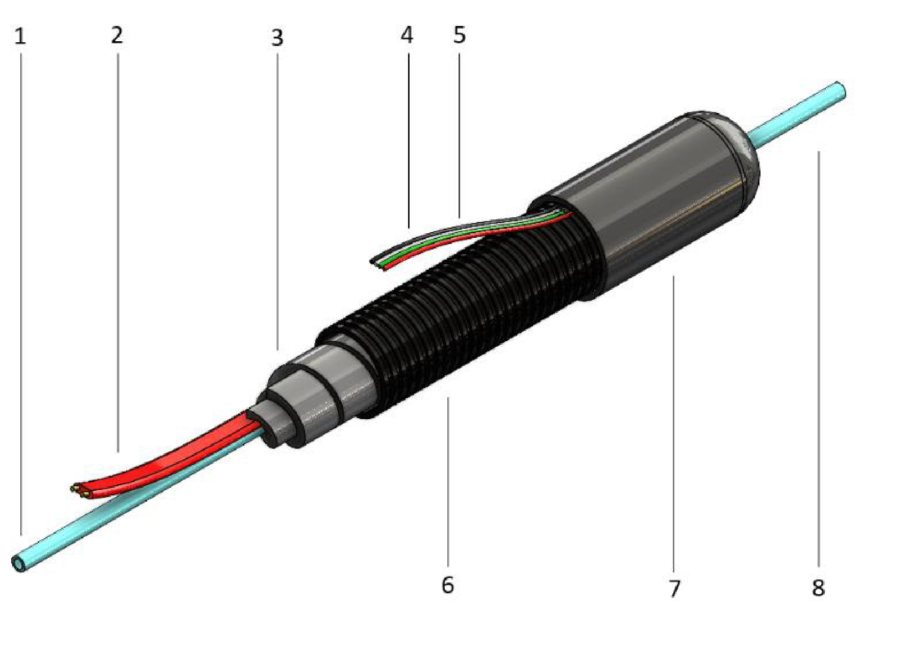
1. Process tube · 2. Self-regulating or power-limiting cable · 3. Meta-aramid felt insulation · 4. Power leads · 5. Optional temperature sensor · 6. Outer jacket · 7. End seals · 8. Optional end connections
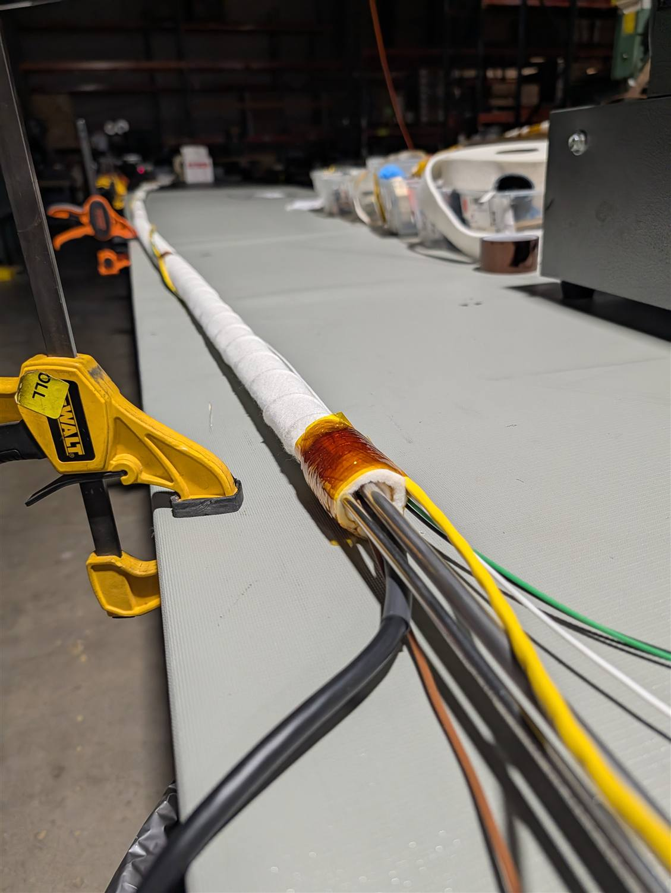
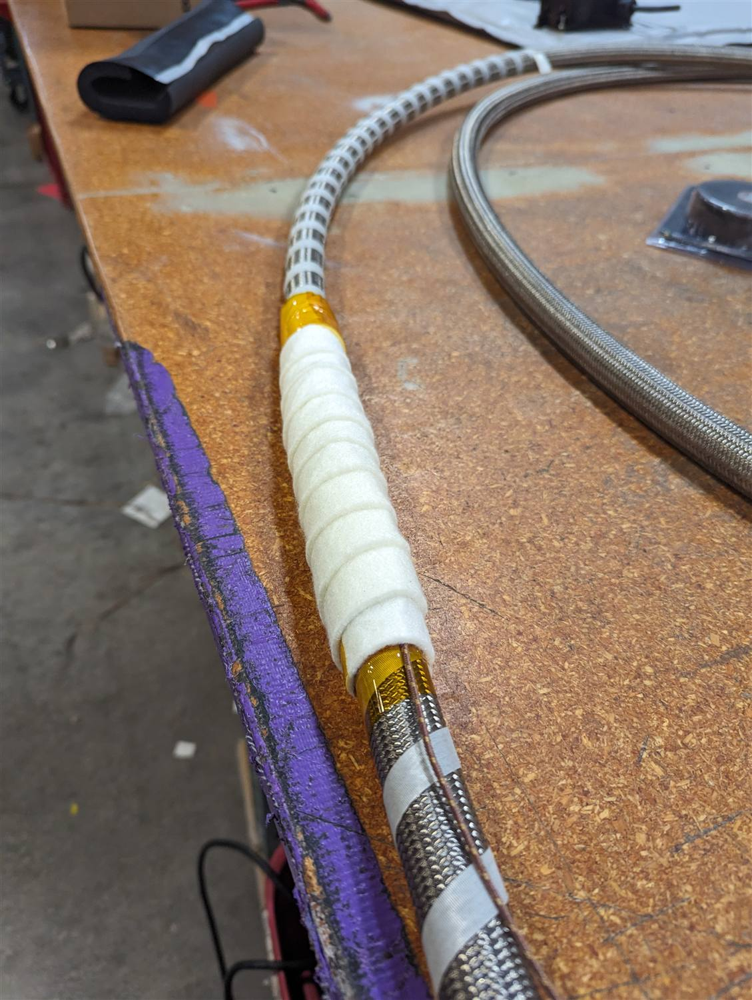
The Engineering Behind It
Every heated line starts from the same short list of decisions: how you'll heat it, what the tube is made of, how it's insulated, and what protects it on the outside. Get those four right for your process conditions and the rest — dimensions, controls, terminations — falls into place during the engineering interview below. Here's what actually changes from one material or construction to the next, and why we'd recommend one over another.
Up to 500°F exposure · 400°F (204°C) continuous maintain · 5–20 W/ft, built to your number
An alloy heater wire wound on a polyimide/silicone tape, custom-built to the exact watt density your process needs rather than selected from a fixed step.
Benefits
Watch-outs
Up to 464°F exposure · 356°F (180°C) continuous maintain · BSX, HTSX, VSX-HT, HPT, or USX families, 3–20 W/ft steps
A heat-trace cable that self-limits its own output as it warms, selected from a proven family of fixed watt-density steps.
Benefits
Watch-outs
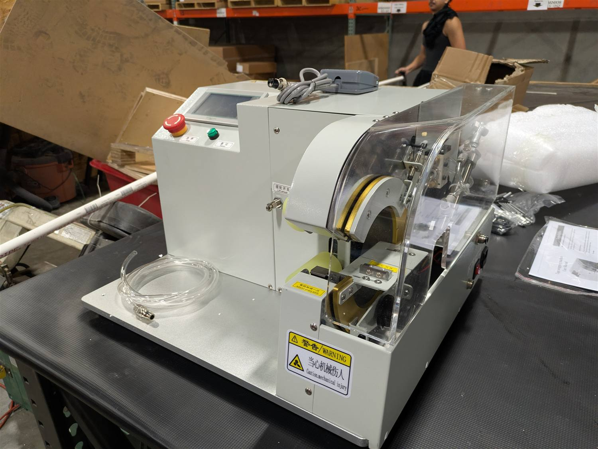
The tube carries your sample or transported media, so chemical compatibility usually decides this choice before temperature or cost ever enters the conversation.
| Material | Max Continuous Temp | Chemical Resistance | Relative Cost/ft | Best Fit / Watch-outs |
|---|---|---|---|---|
| PFA | 500°F (260°C) | Resists nearly all acids, bases, and solvents — among the most chemically inert plastics available | $$ | Smooth bore resists adsorption; a common RATA/CEMS choice |
| FEP | ~400°F (205°C) | Excellent broad chemical resistance, very close to PFA | $$ | Similar to PFA at a slightly lower temperature ceiling |
| PTFE | 500°F (260°C) | Outstanding chemical inertness — the benchmark other tube materials are compared against | $$ | Same ceiling as PFA; a common substitute where PFA isn't specifically called for |
| Nylon | ~200°F (93°C) | Poor resistance to strong acids and many solvents; absorbs moisture over time | $ | Lowest-cost tube option; only for low-temperature, non-aggressive transfer |
| Polyethylene | ~150°F (66°C) | Good resistance to many bases; weak against hydrocarbons and oxidizers | $ | Lowest temperature ceiling in the lineup; general-purpose, cost-sensitive builds only |
| 316 / 304 Stainless Steel (seamless or welded) | Set by the heater/insulation, not the tube | Excellent resistance to most process chemistries; 316's molybdenum content beats 304 on chloride/pitting resistance | $–$$ | Seamless costs meaningfully more than welded at the same size; the default whenever plastic tubing isn't chemically compatible |
| SilcoNert®-Coated 316 SS | Same as bare 316 SS | Same base metal, plus a deactivated internal surface that resists adsorbing or reacting with trace-level compounds | $$$$ | A substantial premium over bare stainless for the coating process; standard for mercury and other trace-level RATA work |
| Copper | Moderate | Reacts with many process chemistries and ammoniacal compounds — not a broad-resistance choice | $$ | Good thermal conductivity; largely legacy or simple-transfer use today |
| Monel | High | Outstanding resistance to hydrofluoric acid and chloride / seawater environments | $$$$ | Specialty alloy for specific corrosive services |
| Titanium | High | Outstanding resistance to oxidizing chlorides; very light weight | $$$$ | Specialty alloy for weight-sensitive or highly oxidizing services |
| Alloy C276 (Hastelloy) | High | One of the broadest chemical-resistance profiles available, including wet chlorine and hot contaminated acids | $$$$ | Premium alloy reserved for the most aggressive process chemistries |
| Alloy 825 | High | Strong resistance to sulfuric/phosphoric acid and chloride stress-corrosion cracking | $$$$ | Specialty alloy |
| Alloy 20 | High | Developed specifically for sulfuric acid service | $$$$ | Specialty alloy |
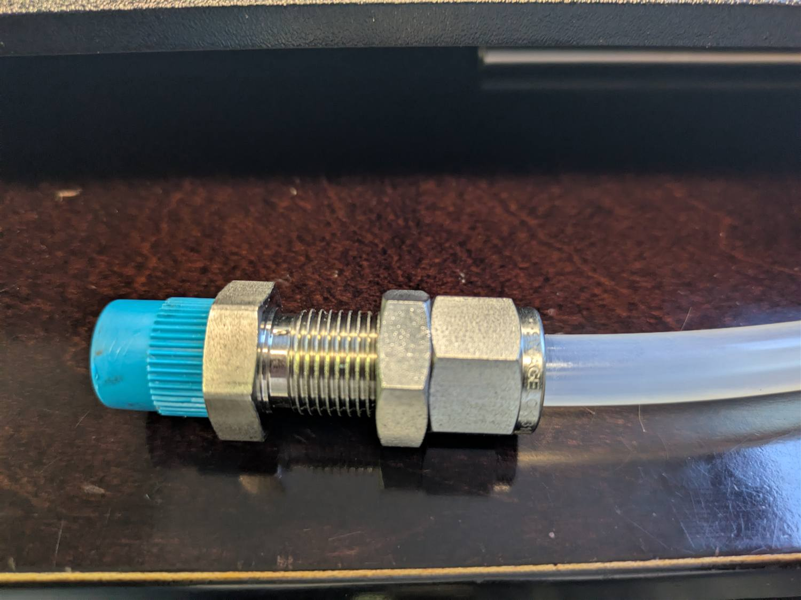
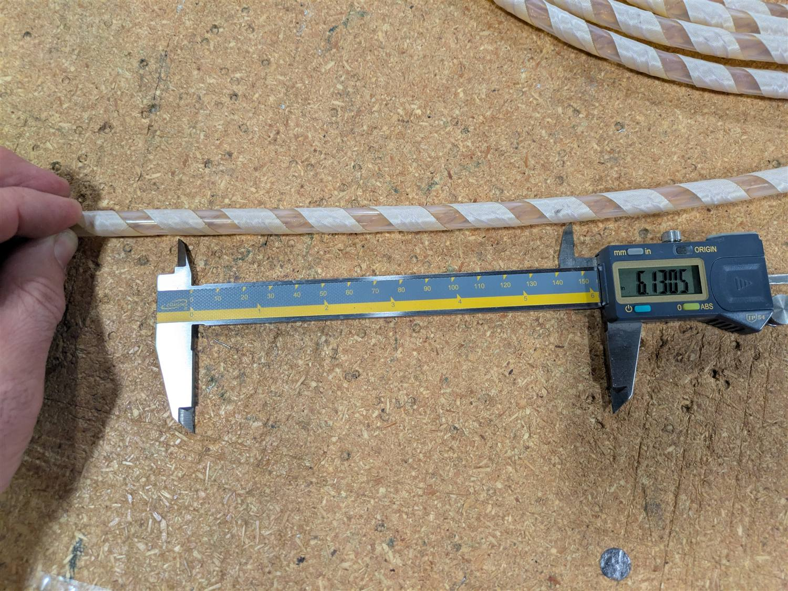
| Type | Max Temp | Relative Cost/ft | Notes |
|---|---|---|---|
| Meta-Aramid / Nomex Felt | 650°F (343°C) | $ | The widest headroom above the heater's own ceiling; flexible; the standard choice on most builds |
| Silicone Insulation | Comparable high-temperature range to Nomex | $$$ | Added flexibility and better moisture resistance than felt, at a higher relative cost |
| Neoprene | 250°F (121°C) | $$$ | Lower temperature ceiling than felt, but valued for oil, ozone, and weather resistance outdoors |
Power density and temperature rise trade off directly through the insulation you choose. This chart solves the standard cylindrical-conduction heat-transfer equation live as you change the inputs — pick an insulation type, thickness, and tube size, and watch the curve update.
The theoretical-minimum line is calculated from the standard cylindrical-conduction heat-transfer equation for insulated pipe (the same method taught in professional heat-tracing design courses), using published thermal-conductivity values for each insulation type shown, and assumes a thin outer jacket (negligible added resistance). It's a physics floor, not a spec — real heater cables draw meaningfully less power as they heat up (their resistance rises with temperature), so a cable sized only to the theoretical loss can fall short at the hot end. The Engineering Recommended line adds that real-world design margin, calibrated to Powerblanket's own reference build (a 3/8" tube with 2 wraps of Nomex felt, sized to 24 W/ft to reach 400°F from a ~70-80°F ambient) and applied here as a flat multiplier — actual margin varies somewhat by heater cable and run length. Powerblanket's own Meta-Aramid/Nomex felt insulation performs in the same general range as the fiberglass/mineral-wool class shown here — an exact published k-value for it isn't publicly available. Real-world performance also depends on wind, jacket emissivity, and installation; final sizing is confirmed during engineering review.
| Type | Water Resistant | Relative Cost/ft | Notes |
|---|---|---|---|
| Polyolefin Heat-Shrink | Yes | $ | Lightweight, low-profile, lowest cost; indoor or lightly-exposed runs |
| Abrasion-Resistant Sleeving | No | $ | Tough mechanical protection but not sealed against moisture — indoor/dry routing only |
| Corrugated Polyethylene / Polypropylene | Yes | $$ | Flexible and weather-sealed; the common general-purpose outdoor choice |
| Thermoplastic Rubber, Wire-Reinforced | Yes | $$$ | Adds crush/kink resistance for high-traffic or heavy mechanical environments |
| Polyamide 6 Tubing | Yes | $$$$ | Premium abrasion and chemical resistance; suited to continuous-duty routing like robotics and automotive lines |
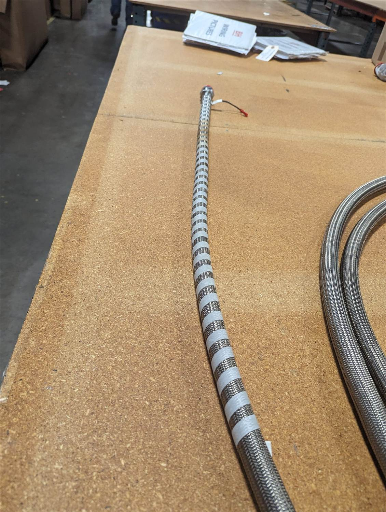
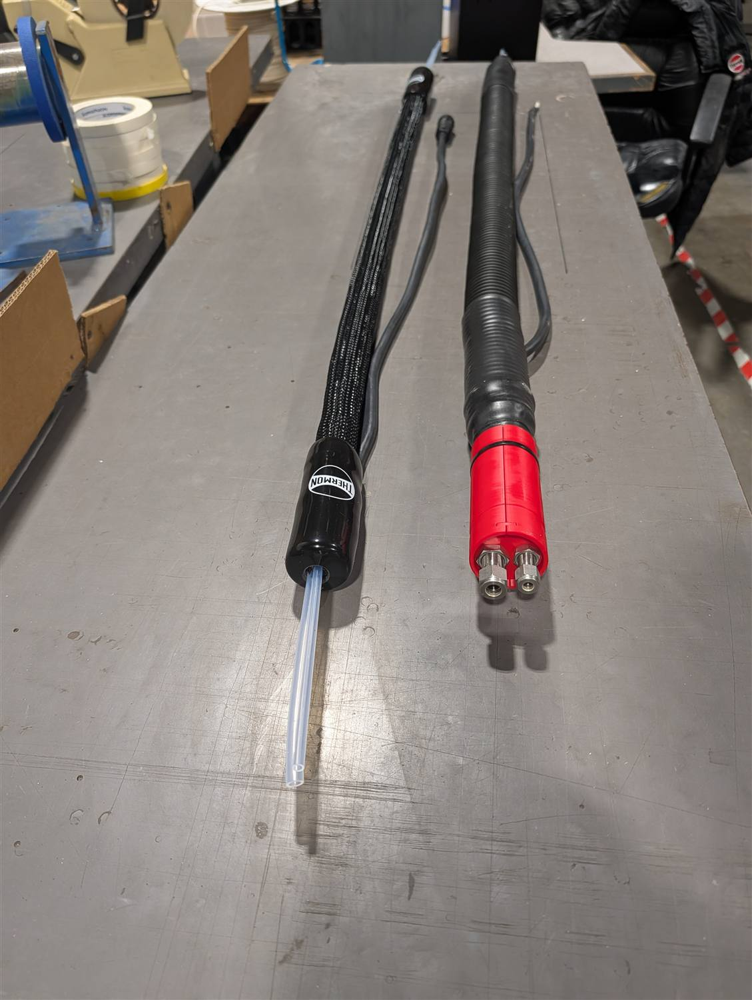
Cost tiers ($ to $$$$) show relative cost per foot among the options we build with — not a quote. Exact pricing depends on your full configuration and is provided after engineering review.
From Our Shop Floor
Watch: feeding a process tube through our heater-wrapping machine.
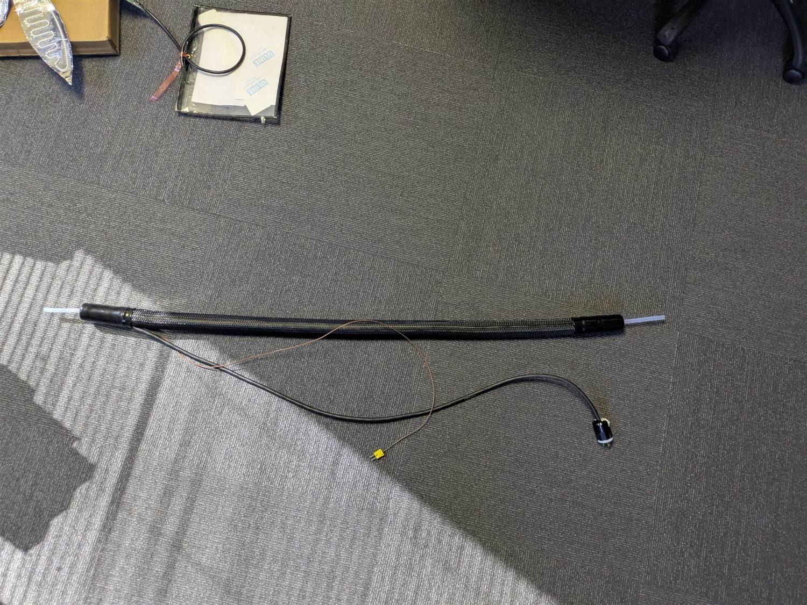
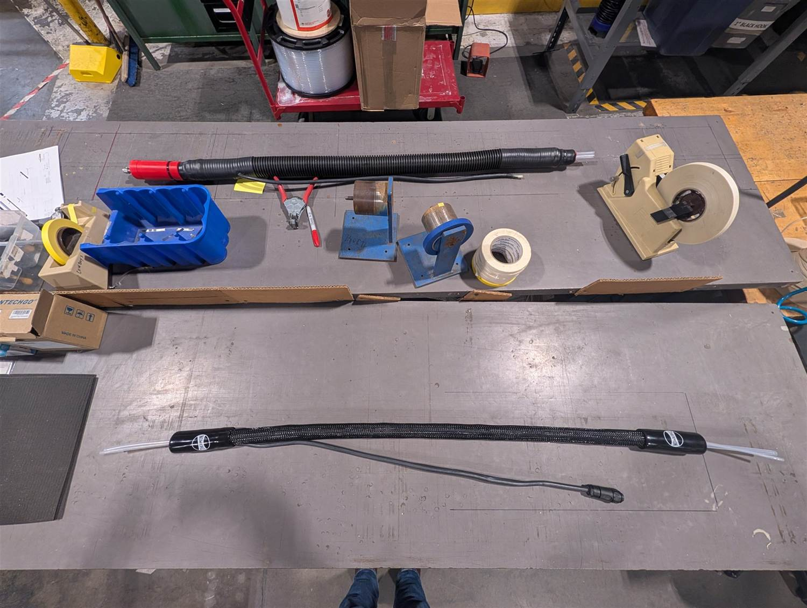
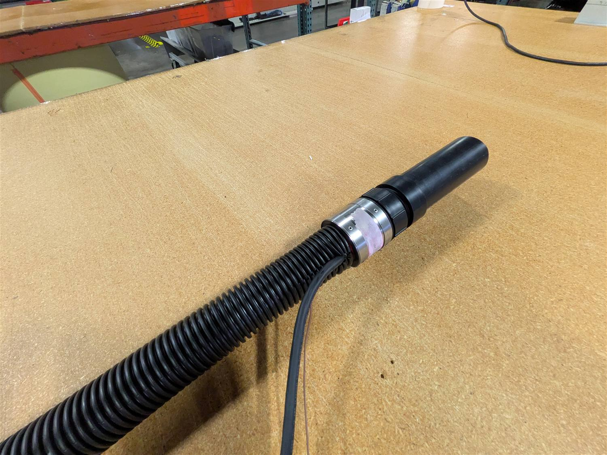
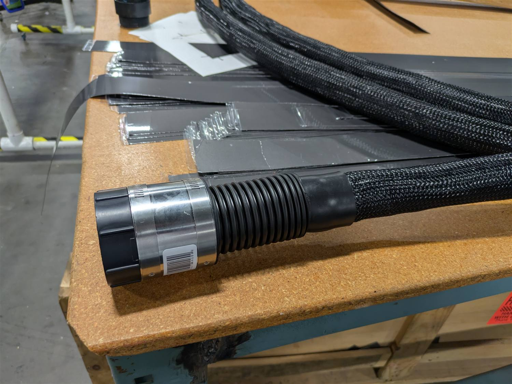
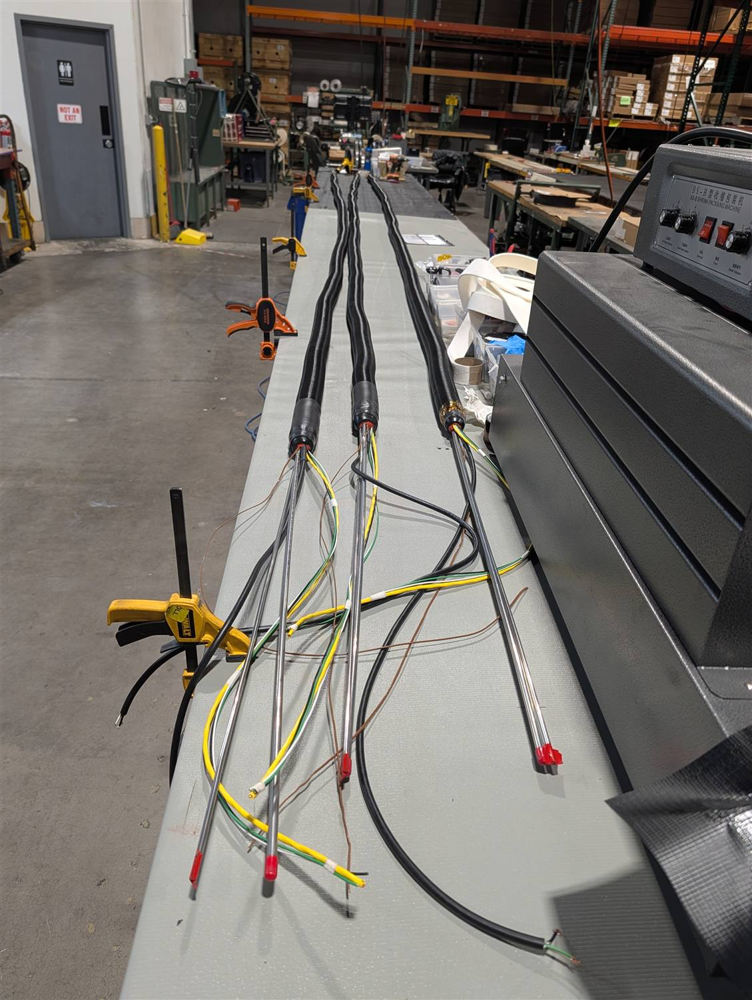
Application Types
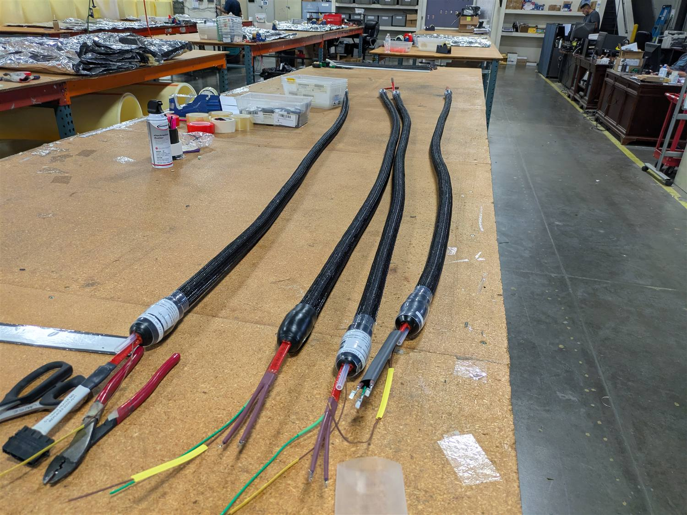
Fixed continuous emissions monitoring — long permanent runs, held above dew point end to end.
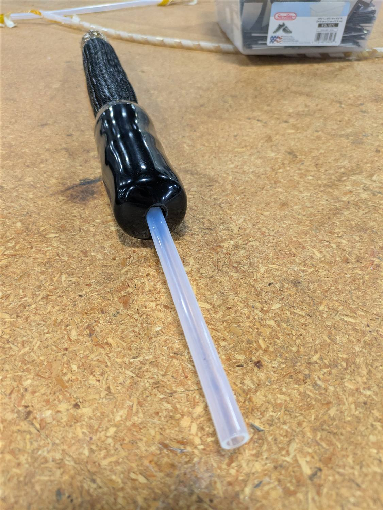
Portable relative accuracy test audits — shorter runs, inert-coated tubing for trace-level accuracy.
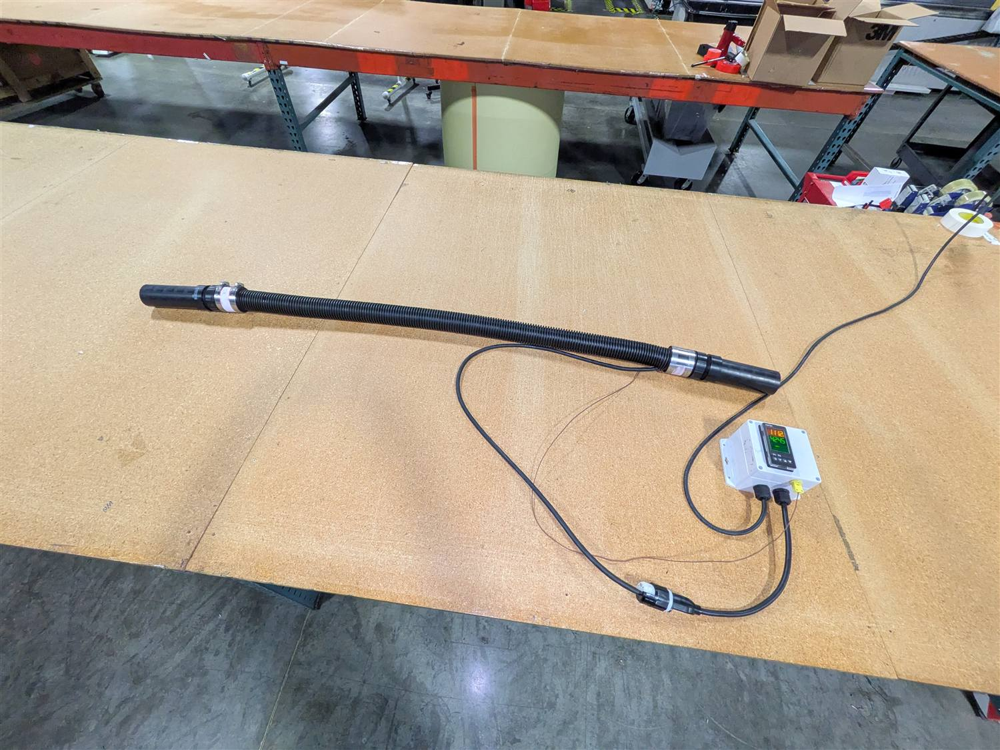
Ongoing process analyzer sampling — matched to your process conditions and control needs.
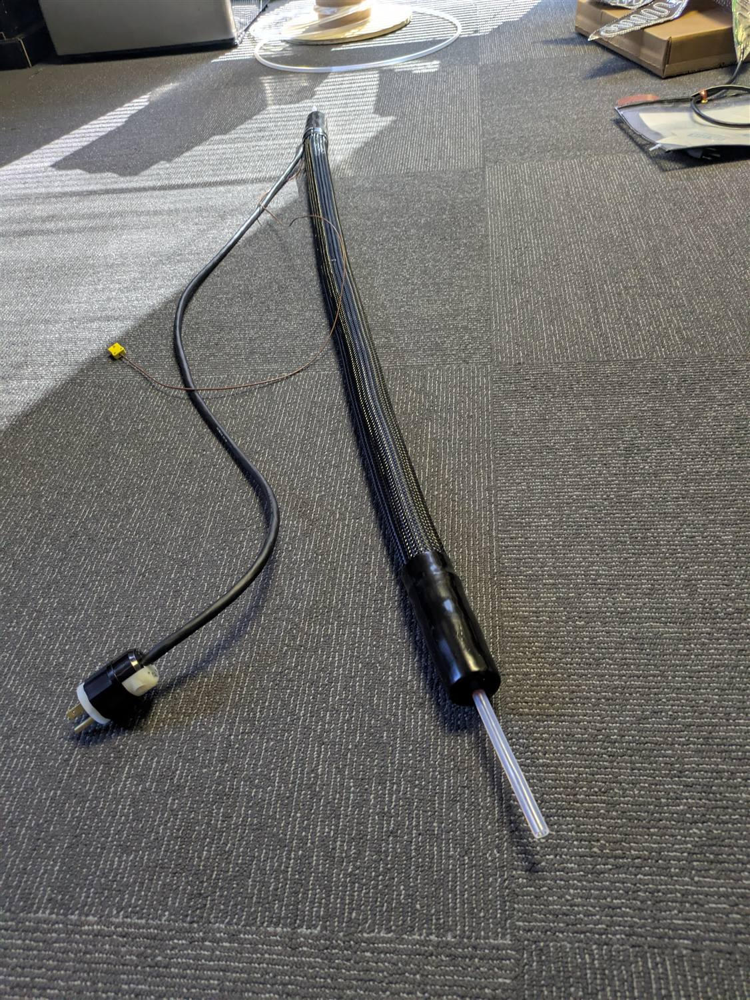
Adhesives, resins, and heavy oils that need to stay within a workable temperature range in transit.
Whatever your application, an engineer can help you get to a spec. Talk to an Engineer
A Real Build
One real specification pulled from Powerblanket's own engineering files, generalized here to show what a finished configuration actually looks like end to end — not a template to copy, just a real example.
This is a real, as-built Powerblanket specification, generalized to show construction patterns — exact vendor parts, adhesives, and costs are never shared publicly. Every build starts with a conversation about your own process conditions.
Rounding It Out
Hazardous-location configurations are available with FM and CSA approvals (Class I/II, Divisions 1 & 2, and Zone 1/2 ratings depending on construction) — exact certification depends on your specific configuration and is confirmed during engineering review.
Engineering Resources
Still Have Questions?
If you have additional questions after reading this guide, a real Powerblanket applications engineer will answer them personally — no pressure, no obligation.
Ask an Engineer